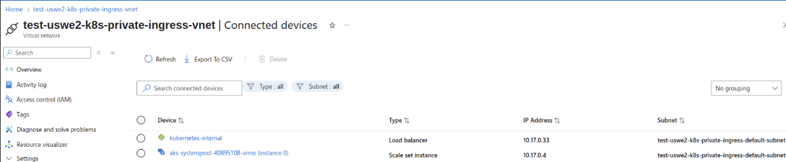

Deploy do Ingress NGINX com Load Balancer Interno
Para que o Ingress NGINX utilize um IP privado, configure o NGINX Ingress Controller para criar um Load Balancer Interno no Azure.
Passos:
-
Instale o Ingress NGINX:
- Use o Helm para instalar o NGINX Ingress Controller no seu cluster AKS.
- Configure o controller para usar um Load Balancer Interno ajustando o campo
service.annotations.
-
Instalação via Helm:
helm repo add --kubeconfig ./kubeconfig ingress-nginx https://kubernetes.github.io/ingress-nginx helm repo update --kubeconfig ./kubeconfig helm install --kubeconfig ./kubeconfig ingress-nginx ingress-nginx/ingress-nginx \ --namespace ingress-nginx \ --create-namespace \ --set controller.service.annotations."service\.beta\.kubernetes\.io/azure-load-balancer-internal"="true" \ --set controller.service.annotations."service\.beta\.kubernetes\.io/azure-load-balancer-subnet"=test-uswe2-k8s-private-ingress-default-subnet- A annotation
service.beta.kubernetes.io/azure-load-balancer-internal=truegarante que o Load Balancer será interno (privado). - A annotation
azure-load-balancer-subnetespecifica a subnet do AKS para alocação do IP privado.
- A annotation
-
Verifique o Load Balancer Interno:
-
Após o deploy, verifique o serviço do NGINX para confirmar que ele recebeu um IP privado:
kubectl --kubeconfig=./kubeconfig get svc -n ingress-nginx -
Exemplo de saída:
NAME TYPE CLUSTER-IP EXTERNAL-IP PORT(S) AGE ingress-nginx-controller LoadBalancer 10.0.130.113 10.17.0.33 80:32229/TCP,443:32041/TCP 8m35s -
O EXTERNAL-IP (ex: 10.17.0.33) é o IP privado na subnet do AKS.
-
Para maior certeza, confira no portal Azure se o Load Balancer interno foi criado
-

Dois ingress-nginx
- Em um cenário com dois ingress-nginx (privado e público), como selecionar o ingress correto no deployment?
- Como ajustar a escolha do ingress no chart base da Acqio?
Implementação passo a passo
```shell
[Segunda VNet: 10.2.0.0/16] [VNet AKS: 10.17.0.0/16]
+---------------------------+ +---------------------------+
| Subnet: 10.2.1.0/24 | | Subnet: 10.17.0.0/25 |
| +---------------------+ | | +---------------------+ |
| | VM/App de Serviço | | | | Cluster AKS | |
| +---------------------+ | | | +-----------------+ | |
| | | | | NGINX Público | | |
| | | | | (LB Público) | | |
| | | | | IP Público: | | |
| | | | | 172.179.50.13 | | |
| | <-- Peering de VNet-> | | +-----------------+ | |
| | | | | NGINX Privado | | |
| | | | | (LB Interno) | | |
| | | | | IP Privado: | | |
| | | | | 10.17.0.100 | | |
| | | | +-----------------+ | |
| | | | | Pods Workload | | |
| | | | +-----------------+ | |
| | | +---------------------+ |
+---------------------------+ +---------------------------+
| |
| Internet Pública |
+------------------> [IP Público: 172.179.50.13] <-----+
```
-
Verifique o Ingress Controller Público O controller público existente está rodando no namespace public-ingress-nginx com IP público (172.179.50.13).
Verifique a configuração:
kubectl --kubeconfig=./kubeconfig get svc -n public-ingress-nginxSaída:
NAME TYPE CLUSTER-IP EXTERNAL-IP PORT(S) AGE public-ingress-nginx-controller LoadBalancer 10.0.4.119 172.179.50.13 80:31845/TCP,443:32048/TCP 5m13sVerifique as anotações:
kubectl --kubeconfig=./kubeconfig get svc public-ingress-nginx-controller -n public-ingress-nginx -o yamlCertifique-se de que não há a annotation service.beta.kubernetes.io/azure-load-balancer-internal (ou está como false), confirmando que é um Load Balancer público.
Verifique o IngressClass:
Descubra se o controller público usa um IngressClass. Por padrão, o Ingress NGINX cria um IngressClass chamado nginx:
kubectl --kubeconfig=./kubeconfig get ingressclassExemplo de saída:
NAME CONTROLLER PARAMETERS AGE nginx k8s.io/ingress-nginx <none> 5mSe não houver IngressClass definido, o controller pode processar todos os recursos Ingress sem um ingressClassName, o que pode causar conflitos com o controller privado.
Ação:
Se o controller público usa o IngressClass padrão nginx, crie um novo IngressClass para o controller privado para evitar sobreposição.
-
Deploy do Ingress Controller Privado Faça o deploy de um segundo controller NGINX no namespace private-ingress-nginx, configurado para usar ILB com IP privado.
Valores Helm (private-ingress-values.yaml):
controller: ingressClassResource: name: nginx-private controllerValue: "k8s.io/ingress-nginx-private" service: annotations: service.beta.kubernetes.io/azure-load-balancer-internal: "true" service.beta.kubernetes.io/azure-load-balancer-subnet: "test-uswe2-k8s-private-ingress-default-subnet" replicaCount: 1 nodeSelector: {}Principais configurações:
ingressClassResource.name: Cria um novo IngressClass chamado nginx-private para o controller privado.controllerValue: Garante que o controller privado só processe recursos Ingress com a classe nginx-private.service.annotations: Configura o ILB com IP privado da subnet test-uswe2-k8s-private-ingress-default-subnet.replicaCount: 1: Mantém o setup mínimo para testes.
Deploy do Ingress Privado:
helm upgrade --install --kubeconfig ./kubeconfig private-ingress-nginx ingress-nginx/ingress-nginx \ --namespace private-ingress-nginx \ --create-namespace \ -f templates/private-ingress-nginx/values.yamlVerifique:
Cheque o serviço:
kubectl --kubeconfig=./kubeconfig get svc -n private-ingress-nginxSaída esperada:
kubectl --kubeconfig=./kubeconfig get svc -n private-ingress-nginx NAME TYPE CLUSTER-IP EXTERNAL-IP PORT(S) AGE private-ingress-nginx-controller LoadBalancer 10.0.150.195 10.17.0.33 80:30656/TCP,443:30288/TCP 82s private-ingress-nginx-controller-admission ClusterIP 10.0.207.24 <none> 443/TCP 82sCheque o IngressClass:
NAME CONTROLLER PARAMETERS AGE nginx k8s.io/ingress-nginx <none> 5m nginx-private k8s.io/ingress-nginx-private <none> 1m -
Configure os recursos Ingress
Atualize seus recursos Ingress para especificar qual controller irá processá-los usando o campo ingressClassName.
Exemplo de Ingress Público: Para workloads expostos publicamente:
apiVersion: networking.k8s.io/v1 kind: Ingress metadata: name: public-sample-app-ingress namespace: default annotations: nginx.ingress.kubernetes.io/rewrite-target: / spec: ingressClassName: nginx rules: - host: public.example.com http: paths: - path: / pathType: Prefix backend: service: name: sample-app-service port: number: 80Exemplo de Ingress Privado: Para workloads expostos privadamente:
apiVersion: networking.k8s.io/v1 kind: Ingress metadata: name: private-sample-app-ingress namespace: default annotations: nginx.ingress.kubernetes.io/rewrite-target: / spec: ingressClassName: nginx-private # Aqui você define qual tipo de ingress usar, neste caso o privado rules: - http: paths: - path: / pathType: Prefix backend: service: name: sample-app-service port: number: 80Notas: - O
ingressClassName: nginxdireciona para o controller público. - OingressClassName: nginx-privatedireciona para o controller privado. - Para o Ingress privado, pode-se omitir o campohostse for acessar por IP, ou usar uma zona DNS privada (ex:app.example.internal). -
Teste o acesso público e privado
Acesso público:
Teste o Ingress público:
curl http://public.example.comOu use o IP público:
curl http://172.179.50.13Verifique a resposta da aplicação de exemplo (ex: página padrão do NGINX).
Acesso privado:
De uma VM ou serviço na VNet peered (10.2.0.0/16):
curl http://10.17.0.100Se estiver usando uma zona DNS privada:
curl http://app.example.internalVerifique a resposta da aplicação de exemplo.
-
Segurança e Otimização
-
NSG para ILB Privado: Restrinja o acesso ao IP do ILB privado (ex: 10.17.0.100):
resource "azurerm_network_security_group" "aks_nsg" { name = "nsg-aks-subnet" location = azurerm_resource_group.aks.location resource_group_name = azurerm_resource_group.aks.name } resource "azurerm_network_security_rule" "allow_ingress" { name = "allow-ingress-from-second-vnet" priority = 100 direction = "Inbound" access = "Allow" protocol = "Tcp" source_port_range = "*" destination_port_range = "80,443" source_address_prefix = "10.2.0.0/16" destination_address_prefix = "10.17.0.100" resource_group_name = azurerm_resource_group.aks.name network_security_group_name = azurerm_network_security_group.aks_nsg.name } resource "azurerm_subnet_network_security_group_association" "aks_subnet_nsg" { subnet_id = azurerm_subnet.aks_subnet.id network_security_group_id = azurerm_network_security_group.aks_nsg.id } -
Segurança do Load Balancer Público: Use um NSG ou Azure Firewall para restringir o acesso público a fontes específicas, se necessário.
-
Isolamento de Recursos:
- Opcionalmente, use node selectors ou taints/tolerations para rodar os pods dos controllers público e privado em node pools diferentes:
controller: nodeSelector: ingress-type: private- Adicione um label aos nodes:
kubectl --kubeconfig=./kubeconfig label nodes <node-name> ingress-type=private
-
Trade-offs e Considerações
- Uso de recursos:
- Rodar dois controllers Ingress consome mais recursos do cluster (CPU, memória, IPs). Para testes, mantenha replicaCount: 1 para minimizar custos.
- Em produção, escale réplicas conforme o tráfego e use node pools separados para isolamento.
- Complexidade de configuração:
- Gerenciar dois controllers exige configuração cuidadosa de IngressClass e anotações para evitar conflitos.
- Use convenções de nomes claras (ex: nginx para público, nginx-private para privado) para reduzir confusão.
- Conflitos de roteamento:
- Sem ingressClassName, ambos controllers podem tentar processar todos os recursos Ingress. Sempre especifique ingressClassName nos recursos. Rede:
- Garanta que a subnet (10.17.0.0/25) tenha IPs suficientes para ILB e LB público.
- Verifique se o peering de VNet permite tráfego para o ILB privado.
- Segurança:
- O Ingress público está exposto à internet, então implemente WAF (ex: Azure Application Gateway) ou rate limiting para proteção.
- O Ingress privado é interno, mas NSGs garantem que só a VNet peered pode acessá-lo.
Boas Práticas
- Use IngressClass: Sempre especifique ingressClassName nos recursos Ingress para direcionar o tráfego ao controller correto.
- Isolamento de Namespaces: Faça deploy dos controllers em namespaces separados (public-ingress-nginx, private-ingress-nginx) para clareza e RBAC.
- Fixe IPs: Use loadBalancerIP para fixar o IP do ILB privado (ex: 10.17.0.100) e do IP público, se necessário.
- Monitoramento: Ative Azure Monitor ou Prometheus para monitorar a saúde e performance de ambos controllers.
- DNS: Use zona DNS privada para o Ingress privado e zona pública para o público.
- Gestão de custos: Para testes, minimize réplicas e destrua recursos não utilizados (terraform destroy).
DNS e SSL/TLS
**Estudo pendente**